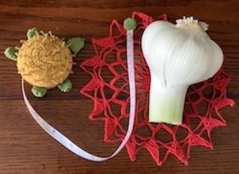
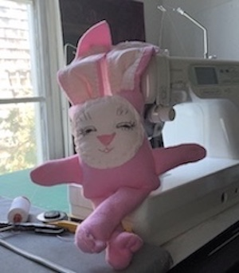
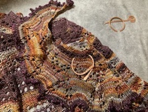
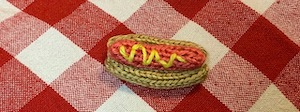
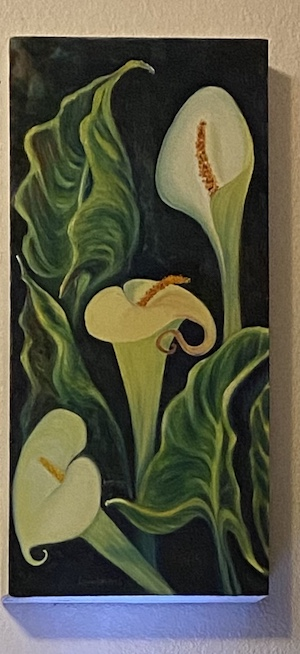
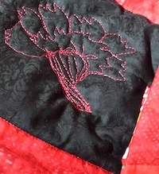

Beaded Lace Shawl

It was an early assignment for EPICODUS written in HTML. It was my solution to doing the assignment and not wanting to call it the suggested,"Boring Lecture." My dad encouraged and demonstrated the "Growth Mindset" to me when he was alive. My own love of learning, growing and being productive was inspired by his example.
I retired from teaching in 2010. All the creativity and energy it took for me to be a full-time Kindergarten and ESL teacher was diverted into hobbies, lots and lots of hobbies.
SNL rap about hobbies


Hobbies are fun; but now I am learning to code. I told my daughter, who is an Epicodus alumnus and employed as a developer, that I am already a Senior Developer. I am a developer and I am over 65.
My daughter shakes her head, rolls her eyes and sighs, "Mom."     